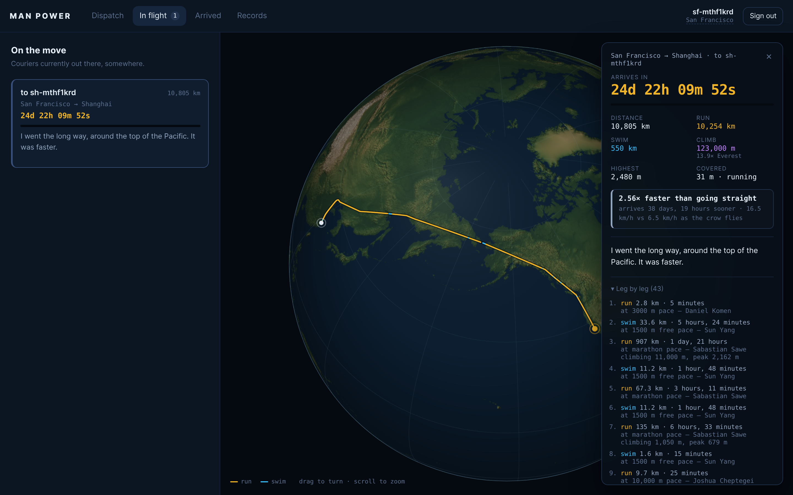

Carrier-pigeon messaging, except the courier is the fastest human alive.
Your message is not transmitted. It is carried — run across every landmass, swum across every sea, at world-record pace the whole way. It arrives when a human could have arrived, and not one second sooner.
This runs the real routing engine — the same world-record ladder, the same coastline data, the same great-circle leg splitting the app uses. Nothing is precomputed and there is no server involved; your browser is doing the whole thing.
Loading coastlines…
The shortest path over a sphere between the two points, sampled every half-kilometre to ten kilometres depending on its length.
Each sample is tested against a coastline bitmap rasterized from Natural Earth data. Runs of the same surface become legs, and every crossing is bisected down to about fifty metres so it lands on the real coast.
A leg is timed against the world record for its distance, not the journey's. So a six-hundred-metre river crossing is swum at 800 m pace while the four thousand kilometres either side are run at marathon pace.
Records are applied as pace, not as a flat duration. A 400 m hop does not take Josh Kerr's full 3:42.66 — it takes 400 m at his mile pace. That is the only reading that stays coherent at the long end, where a marathon record has to cover thousands of kilometres. Between two records, pace is interpolated along the endurance curve.
The site above is only the calculator. The app itself is a small Bun server with SQLite behind it — handles, inboxes, sealed messages and a live globe tracking every courier in flight.
# clone and start
git clone https://github.com/danielluzhu/man-power.git
cd man-power && bun install
bun run server.js # http://localhost:4321
# or install it as a systemd service
sudo deploy/install.sh # restarts on failure, starts on bootYou need at least two couriers for anything to happen — enlist a second one in a private window and write to yourself the long way round.
